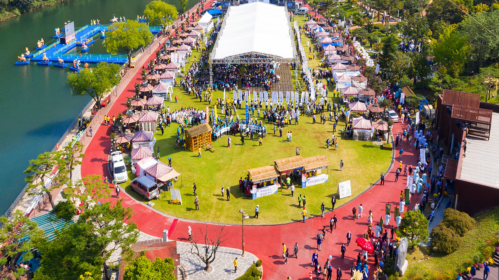
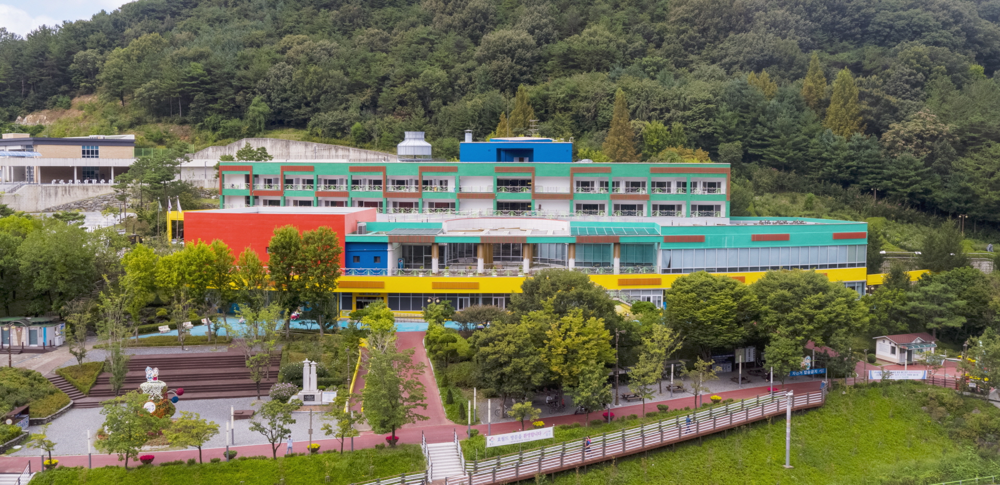
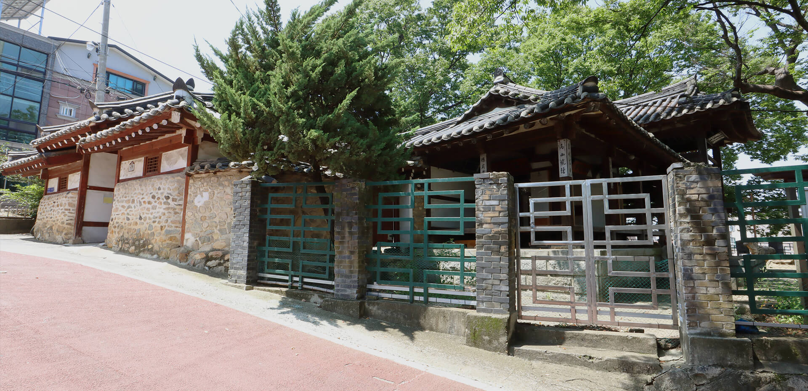
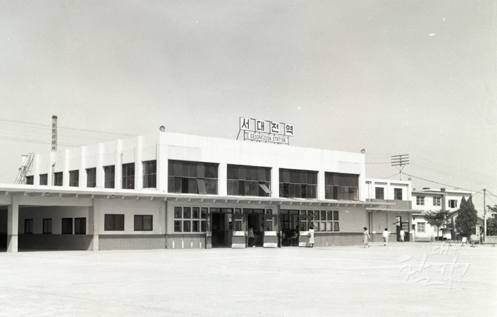
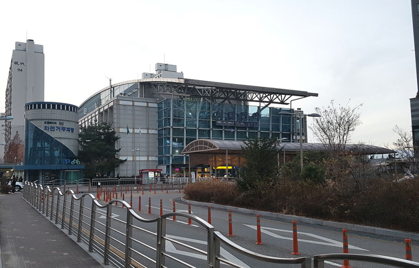

- 


- 
- 
대전 중구 여행 도우미
중구여행에 필요한 각 종 정보를 제공해드립니다.가보고 싶은 그 곳, 중구
중구를 대표하는 시설들을 학인해보세요중구만의 효월드
효월드는 효문화마을, 뿌리공원, 한국족보박물관, 한국효문화진흥원을 아우르는 효문화시설 집합단지로서 효의 가치와 의미에 대한 재확립은 물론 중심역할 수행을 위한 공간으로 민족전통 계승과 효문화 교육에 기여하고 있으며, 인근에는 오월드, 청소년수련마을, 단재신채호선 생생가지 등이 있습니다.대전중구 3名 100선
대전광역시 중구의 유명관광지!이제 3名(명인,명품,명소)으로 체험하세요
-
명인
중구에서 활동했거나, 활동 중인
예술가, 물학가, 장인을 소개합니다. -
명품
중구의 특산물, 가공품, 문화축제, 연극,
세시풍속 등을 소개합니다. -
명소
중구를 대표하는 자연환경, 문화유적 등을 소개합니다.


대전 중구 그때 그곳
서대전역